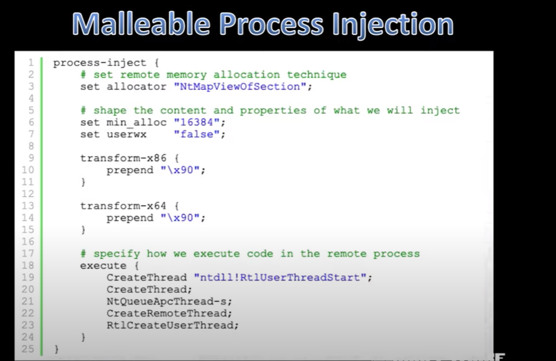
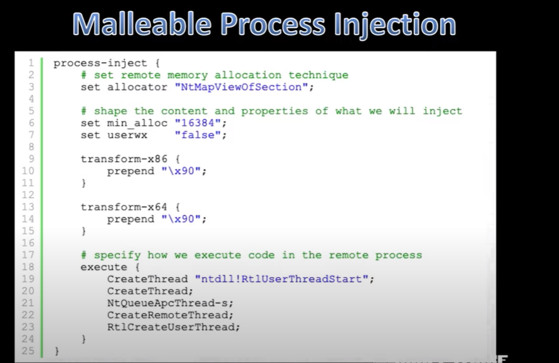

 
- cobalt strike gives you control via malleable C2
- setallocator
- -- allows you to choose between "NtMapViewOfSection" and "VirtualAllocEx"
- -- this is to allocate data in and copy data to a remote process
- transform
- -- shapes content that is being injected into remote process
- execute
- -- specify what you want beacon to try
===================================================================================================================================================
- Memory Inject DLL Evasion
- Behavior
- - set post-ex--> smartinjectto true
- Thread Start Address
- - Controlled by process-injectconfiguration
- Memory Permissions
- - Controlled byprocess-injectconfiguration
- Memory Context
- - set post-ex--> obfuscateto true
- **address to sys32 is random system to system**
-
- same for all processes, so if we know it from one proc, it only changes on boot
====================================================================================================================================================
- PowerShell and .Net Evasionc
- - set post-ex-> amsi_disableto true in aprofile
- (does not affect powershell command)
- - Use powerpick or psinjectinstead of powershell
- - Be aware of powershell-import
- - creates a localhost-only web server
- - prepends a download cradle to each command
- - customize download cradle and PowerShell command via Resouce Kit
====================================================================================================================================================
- 3 Process Inject Situations:
- Self-Inject
- Fors&Run
- Remote Inject

- AVs will look for functions which have a start address which is not backed by a module on disk
- you can avoid making this by
- CreateRemoteThread"module!function+0x##"
- beacon will create a thread in a suspended state, update it, then resume
-

-